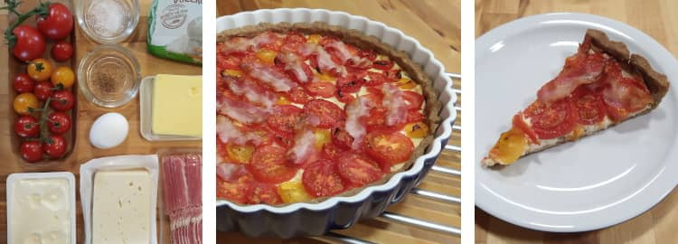

Manches soll nicht gleich in der Timeline versinken …
Auf dieser Website ist Raum für das, wofür meinem Mastodon-Account @charakterziffer zu kurzlebig ist. Mein Blog ist als Plus zu meinen Posts gedacht, eben „@cz+“. // Die letzten drei Artikel:
Seit letztem Schuljahr gibt es an 43 Grundschulen in Bayern einen Modellversuch im Auftrag des Kultusministeriums. Bei diesem Projekt namens „FlowBY“ sollen Schüler:innen das Schreiben nicht in zwei Phasen lernen (erst Druckschrift, dann Schreibschrift), sondern einphasig. Sie üben also von Anfang an ein Schriftmodell aus flüssig geschriebenen Buchstaben, die dann später zu einer Schreibschrift verbunden werden können.
Ähnliche Bestrebungen gibt es mit der Grundschrift in anderen Bundesländern, wobei dieses Schriftmodell mit kleinen Häkchen an den Abstrichen den Schwerpunkt stark auf die Verbindung von Buchstaben legt. Bei FlowBY geht es eher darum, das flüssige Schreiben jedes Zeichens und den Schreibrhythmus einzuüben – denn Verbindungen zwischen den Buchstaben passieren auch in der Luft und müssen nicht zwingend als Strich auf dem Papier ausgeführt werden.
Vorhandene Lehrplanschriften
Als Grafiker, der sich sehr mit Schrift auseinandersetzt (Typografie, Lettering, Kalligrafie, Handschrift), durfte ich beim Start des Projekts mithelfen. Im Bayerischen Lehrplan gibt es als Richtbuchstaben nämlich nur eine statische Druckschrift (eine Variante der Helvetica) oder eben die Schulausgangsschrift bzw. Vereinfachte Ausgangsschrift. Diese Schreibschriften sind von der Formensprache her teilweise weit von der Druckschrift entfernt (z.B. k, p oder Y).
Meine Aufgabe war also, basierend auf den Druckbuchstaben ein Alphabet zu schreiben, das eine flüssige Schreibbewegung berücksichtigt. Wir haben uns dazu die vorhandenen Schriftmodelle angesehen und auch, was in anderen Ländern zu diesem Thema gemacht wird. Es gibt international vermehrt Bestrebungen, das Schreiben einphasig zu unterrichten. Auch historische Vorlagen spielten eine Rolle, v.a. die humanistische Kursive, die sich im 15. Jahrhundert als schreibeffiziente Handschrift entwickelt hat.
Nachteil des zweiphasigen Schrifterwerbs
Zunächst eine Druckschrift zu lernen hilft Schüler:innen, die Grundbestandteile von Buchstaben zu üben: Stammstrich, Bögen, Ovale. Diese Grundformen kombinieren die Kinder dann zu einzelnen Buchstaben. Das Problem: Dieses abgesetzte Konstruieren verhindert, einen flüssigen Schreibrhythmus zu entwickeln. Dazu soll danach die Schreibschrift verhelfen, die mit einem gänzlich neuen Bewegungsablauf (und leider mit einigen unnötigen Schnörkeln) wieder von vorne anfängt. Das kostet Zeit, die lieber in eine intensivere Übung einer Schreibroutine investiert werden sollte.
Beim einphasigen Schrifterwerb sind die Modellbuchstaben so angelegt, dass sie sich bereits in einem Zug schreiben lassen. Das ist zunächst schwieriger als einzelne Grundelemente zusammenzusetzen. Diese Mühe beim Schreiben zahlt sich aber aus: Die Kinder üben von Anfang an einen Bewegungsablauf, der sich durch Wiederholung einprägt und dann ohne Nachdenken ausgeführt werden kann. Wenn dieser Schreibrhythmus automatisch geschieht, können die Schüler:innen dann einzelne Buchstaben auch miteinander verbinden.
Motorisch günstige Buchstaben
Wie gesagt sollten die neuen Richtbuchstaben nah an der Druckschrift bleiben, aber eine flüssige Schreibbewegung berücksichtigen. Hier mein geschriebener Entwurf im direkten Vergleich zur Vorgabe im Lehrplan:
Die obere Zeile zeigt meine handgeschriebenen Buchstaben. Der grüne Punkt und der kleine Farbverlauf kennzeichnet den Schreibbeginn. Darunter die Richtbuchstaben aus dem bayerischen Lehrplan mit kleinen Pfeilen für die Reihenfolge der einzelnen Striche. (Leider haben die Buchstaben auch im Lehrplan eine so schlechte Bildqualität)
Meine Buchstaben lassen sich in einem Zug schreiben. Beispielsweise startet man beim kleinen b oben am Stamm, zieht den Stift nach unten, um ihn dann ohne abzusetzen nach oben in den Bogen zu führen. Es ist eine Konstruktion, bei der der Stift umkehrt und bereits geschriebene Striche teilweise überschreibt.
Bei der Druckschrift schreibt (oder zeichnet?) man auch erst den Stamm, hebt den Stift dann aber vom Papier, um auf mittlerer Höhe mit dem Bogen neu anzusetzen. Ein kleiner, aber entscheidender Unterschied!
Bei den Großbuchstaben hat sich ehrlicherweise gar nicht so viel verändert – sie kommen deutlich seltener im Text vor, darum ist hier Schreiben in nur einem Zug fürs Schreibtempo nicht so entscheidend. Wichtiger war hier die Ähnlichkeit zur Druckschrift.
Natürlich sind schreibeffiziente Eigenschaften wie die umkehrende Konstruktion nicht meine eigene Erfindung. Ich habe mich dabei an vorhandenen Schriftmodellen orientiert und weitere Merkmale in meine Vorlage eingebaut, z.B. die eher ovale statt runde Form sowie die leichte Neigung der Buchstaben (beides Eigenschaften, die sich durchs schnelle Schreiben von selbst ergeben und in der Vorlage nicht überbetont werden müssen). Mehr zur Einübung des flüssig schreibbaren Alphabets liefert ein kompaktes Infoblatt.
Kein digitaler Font
Zumindest im Stadium des Modellversuchs wird es keine digitale Schrift meines Entwurfs geben, mit der Lehrkräfte beispielsweise selbst Arbeitsblätter gestalten könnten. Es gibt in dieser Hinsicht allerdings Entwicklungen aus anderen Ländern. Empfehlenswerte Alternativen sind die kommerzielle Schrift Alku aus Finnland, die kostenlose Primæ aus Österreich (zum Lernen besser die unverbundene Variante!), die OpenSource-Schrift Playpen Sans von TypeTogether, die Grundschrift oder auch die (fürs Ausland kostenpflichtige) deutschschweizer Basisschrift.
Im Spätsommer esse ich gerne diesen süß-würzigen Kuchen. Für den Belag verwende ich mehrere Tomatensorten, vor allem verschiedene Farben sehen recht hübsch aus. Die Zutatenmenge reicht für eine Tarte mit 28 Zentimeter Durchmesser, die man sowohl ofenwarm als auch kalt essen kann.

Zutaten
200 g Mehr (z.B. Dinkel)
Salz
100 g Butter
1 Ei (mittelgroß)
150 g Gorgonzola/Schafskäse
200 g Doppelrahmfrischkäse
600 g Tomaten
schwarzer Pfeffer
5 Scheiben Frühstücksspeck
Oregano (oder Basilikum, zum Garnieren)
Zubereitung
Mehr, 1½ Teelöffel Salz, Butter (zerkleinert), das Ei und falls nötig 1–2 Esslöffel Wasser mit den Knethaken zu einem glatten Teig rühren. Als Kugel in Frischhaltefolie für 30 Minuten in den Kühlschrank legen.
Währenddessen in einer Schüssel den Gorgonzola (oder Schafskäse) mit der Gabel fein zerdrücken und mit dem Frischkäse verrühren. Mit Pfeffer abschmecken. Nun die Tomaten in Scheiben schneiden.
Backofen auf 175 °C Umluft vorheizen. Den Teig ausrollen und in eine flache Tarteform legen. Die Gorgonzola-Creme auf dem Teigboden verstreichen und die Tomatenscheiben schuppenartig darauf legen. Salzen und pfeffern.
Im Backofen auf unterer Schiene 25–35 Minuten backen. Dann die Schinkenscheiben ohne Überlappung auf dem Kuchen verteilen und noch 5 Minuten weiterbacken. Vor dem Servieren mit Oregano oder Basilikum dekorieren (vergesse ich immer).
Der Himmel ist schön, also jedenfalls sehr oft. Das klingt banal, aber es ist mir gerade in letzter Zeit wieder sehr aufgefallen – vielleicht weil ich nach unserem Umzug einen etwas weiteren Blick auf die Himmelsfläche habe. Und dann gibt es diesen selbstverstärkenden Effekt: Wenn ich auf etwas aufmerksam geworden bin, achte ich zukünftig eher darauf und ich bemerke es immer häufiger. Bei schönen Himmelsansichten sicherlich nicht das schlechteste.
Darum möchte ich mit diesem Blogartikel euren eigenen Blick ein wenig lenken. Schaut ruhig öfter mal nach oben und freut euch über die abenteuerlichen Farben und seltsamen Wolkenstrukturen. Selbst wenn es grau ist, gibt es etwas zu entdecken. Was ich in den letzten Monaten am Himmel so gesehen habe? Davon habe ich immer mal wieder Fotos gemacht (Klick aufs Bild öffnet eine größere Ansicht):
Eine Fotoserie über längere Zeit kann den Blick für Gemeinsamkeiten und Unterschiede schärfen und dazu anregen, auf Details zu achten – ich kann so ein Projekt nur empfehlen! Was man außer Wolken noch fotografieren könnte? Baumblätter, rote Gegenstände, Litfaßsäulen, Steine, bewachsene Gehsteigfugen, Käfer, Erker, beklebte Stromkästen … alles, was einem im Alltag begegnet. Ich wünsche euch einen geschärften Blick und eine himmlische Sommerzeit!
Das Wort kombiniert Persönlichkeit (Charakter) mit Sachlichem (Ziffer). Zusammengesetzt ergibt sich ein Synonym für Mediävalziffer, eine Zahlenvariante mit Ober- und Unterlängen.
Schriftarten dieses Blogs
Wenn dein Browser eingebettete Schriften (WOFF2) unterstützt, dann liest du die Fließtexte hier in der Source Sans Pro von Paul D. Hunt, erschienen 2012 bei Adobe.
Die Überschriften sind aus der czSlab gesetzt, die ich für dieses Blog gestaltet habe. Sie orientiert sich an Yanones viel ausgefeilterer Antithesis von 2014.
§ 1 Externe Links · Dieses Blog verlinkt auf Websites Dritter. Zum Zeitpunkt der erstmaligen Verlinkung waren dort keine Rechtsverstöße ersichtlich. Da ich keinen Einfluss auf fremde Websites habe, kann ich für deren Inhalte und Gestaltung keine Haftung übernehmen. Sollte ich von Rechtsverstößen erfahren, entferne ich die Verlinkung unverzüglich. Eine ständige Kontrolle der externen Links ist ohne konkrete Hinweise aber nicht zumutbar.
§ 2 Datenschutzerklärung · Mir ist der Schutz deiner Daten sehr wichtig. Deshalb verzichte ich auf Cookies, vermeide möglichst Dienste von Drittanbietern und erhebe so wenige Daten wie es geht. Diese Website kann ohne die Angabe persönlicher Daten genutzt werden.
Die einzige Ausnahme sind Kommentare. Wenn du einen meiner Texte kommentierst, bekomme ich die eingegebenen Daten und eine Zeitangabe per (prinzipiell unsicherer) E-Mail zugestellt. Falls dein Kommentar sachlich zur Diskussion beiträgt, ergänze ich ihn öffentlich sichtbar unter dem entsprechenden Artikel. Dabei sind sämtliche Angaben freiwillig (Name, Website, Mailadresse, Kommentar) – auch anonyme Kommentare sind möglich.
§ 3 Widerspruch gegen Direktwerbung · Die Verwendung meiner Kontaktdaten zur gewerblichen Werbung ist ausdrücklich nicht erwünscht; ich widerspreche hiermit jeder kommerziellen Nutzung und Weitergabe meiner Daten (gemäß § 21 DSGVO). // Über private Fanpost freue ich mich allerdings sehr und antworte darauf mit großem Vergnügen!
 @charak
@charak